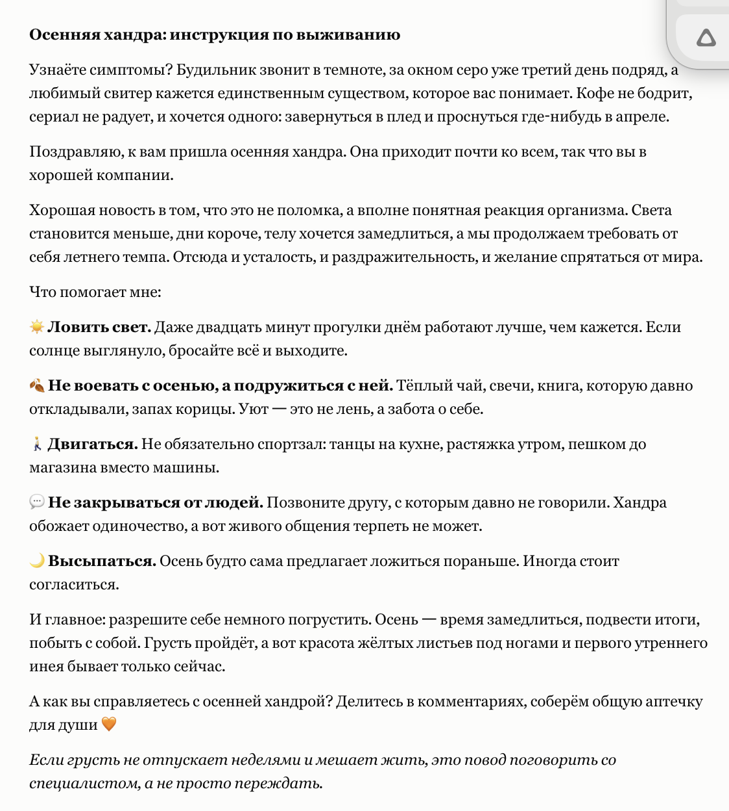
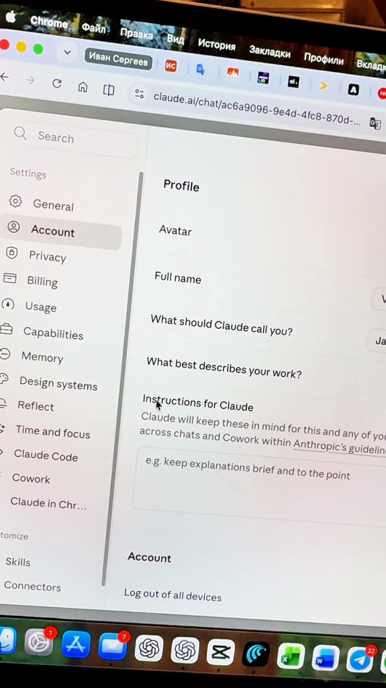
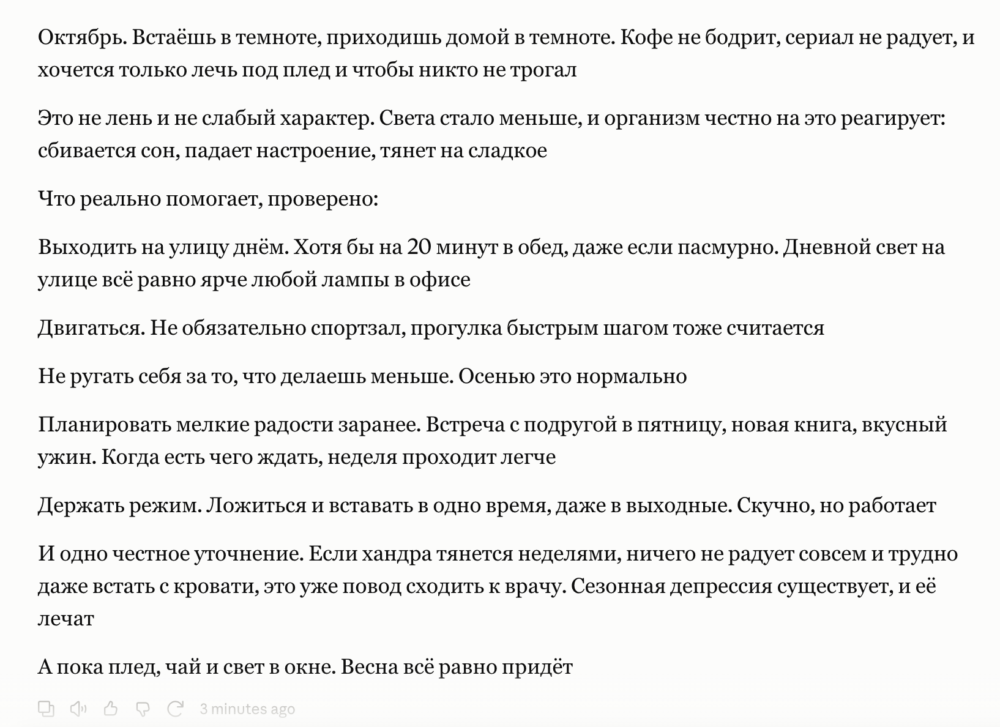

Содержание
Как научить Клода писать в твоём стиле1. Сохрани исходный ответ2. Выбери образец3. Сформулируй правила4. Открой Instructions for Claude5. Повтори запрос и сравниИсточникиClaude.ai · Серия 16
Как научить Клода писать в твоём стиле
Клод может ответить длинно и чужим голосом. Чтобы изменить подачу, покажи образец, сформулируй несколько правил и сохрани их в Instructions for Claude. Затем повтори тот же запрос и сравни результат
Точка сравнения
1. Сохрани исходный ответ
Открой обычный чат Claude и отправь рабочий запрос. Сохрани сам запрос дословно и полученный ответ. В примере это пост про осеннюю хандру. В конце повторишь запрос без изменений, чтобы увидеть разницу

Ориентир для подачи
2. Выбери образец
Возьми короткий текст с нужной интонацией: своё письмо, пост или отрывок книги. Он нужен как пример подачи. Если берёшь чужой текст, выдели особенности, которые хочешь повторить
Стиль складывается из обращения, слов, ритма и структуры. Краткость - только один из признаков. Выбери один небольшой образец, по которому эти особенности хорошо видны
Проверяемые правила
3. Сформулируй правила
В отдельном чате покажи образец и попроси Клода назвать конкретные особенности. Исправь неверные выводы, затем запиши только те правила, которые подходят для будущих разговоров
Ниже образец нужной мне подачи. Перечисли, что в нём характерно: длина абзацев, тон, лексика и структура. Отдельно назови, в чём не уверен. Пока не пиши новый текст Образец:
После слова «Образец» вставь выбранный текст и отправь сообщение. Сверь ответ Клода со своим образцом: например, действительно ли там обращение на «ты», короткие абзацы или шутки. Исправь догадки, с которыми не согласен
Скопируй следующий блок в заметку. Замени строку в квадратных скобках своим текстом, а в часть «Правила» добавь подтверждённые особенности из предыдущего шага. Удали правила, которые тебе не подходят. Получится один готовый блок для настройки
Образец нужной подачи: [Вставь сюда свой текст и удали эту строку] Правила: В ответах используй короткие абзацы и обычные слова. Убирай воду и канцелярит. Не начинай с «важно отметить» и не добавляй общий вывод ради объёма. Не придумывай факты. Если в запросе указан объём, соблюдай его Когда пишешь текст от моего имени, ориентируйся на тон, лексику и структуру образца. Не копируй его дословно и не переноси из него факты в новый текст
Если важна длина конкретного ответа, назови её и в самом запросе: например, «три коротких абзаца»
Реальный путь в интерфейсе
4. Открой Instructions for Claude
Нажми свои инициалы в левом нижнем углу. Открой Settings → Account → Instructions for Claude и вставь подготовленный блок. На показанном экране поле находится на странице Account
Эти инструкции Claude учитывает в разных чатах аккаунта. Оставь здесь то, что подходит постоянно. После ввода закрой настройки, снова открой это поле и убедись, что текст сохранился. Если интерфейс поменяется, ищи в Settings поле с тем же названием

Результат виден в ответе
5. Повтори запрос и сравни
Открой новый чат и отправь сохранённый запрос без изменений. Сверь ответ с конкретными правилами: обращение на «ты» или «вы», длина абзацев, характерные слова, заголовки и шутки. Проверь, сохранился ли смысл. Если какой-то признак не совпал, уточни одно правило в настройке и повтори запрос

Результат: ты видишь, какие правила Клод применил, и знаешь, что уточнить. Для своего текста сверяй свои признаки подачи
Официальная справка
Источники
Бесплатный практикум
Один стиль - начало работы с Claude
На ИИ-Лагере покажут, как перейти от настройки ответов к своему рабочему инструменту
На ИИ-Лагерь